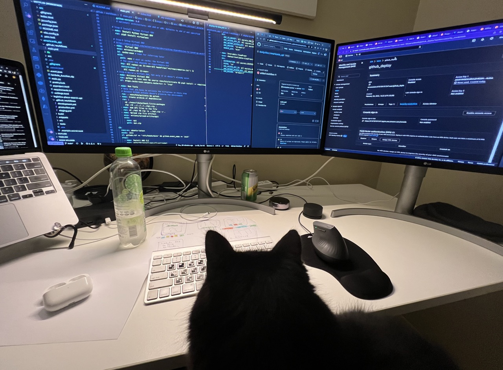
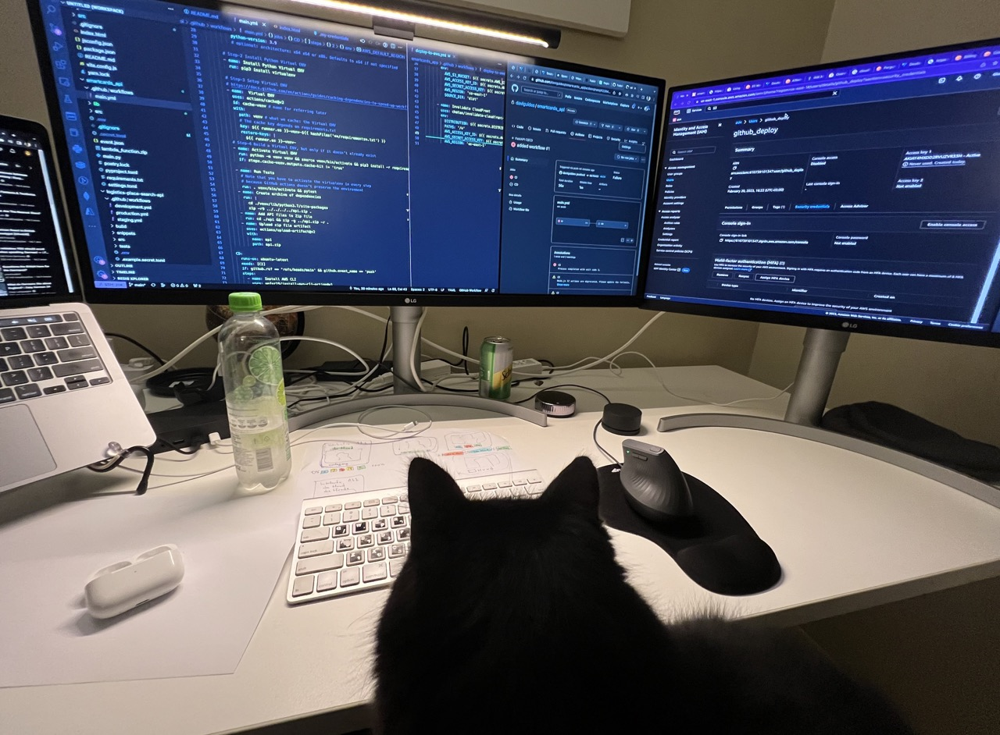
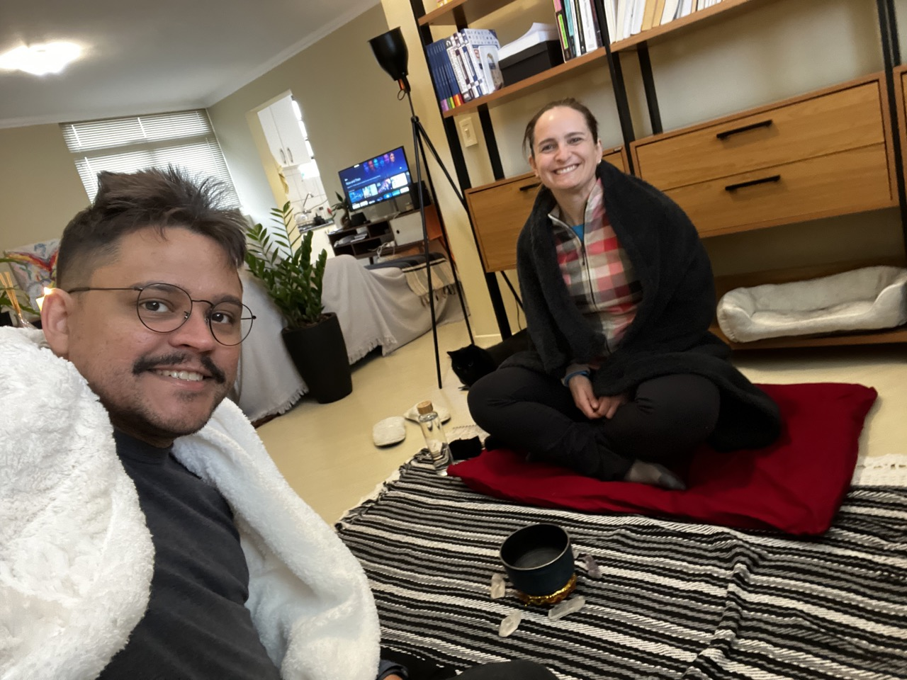
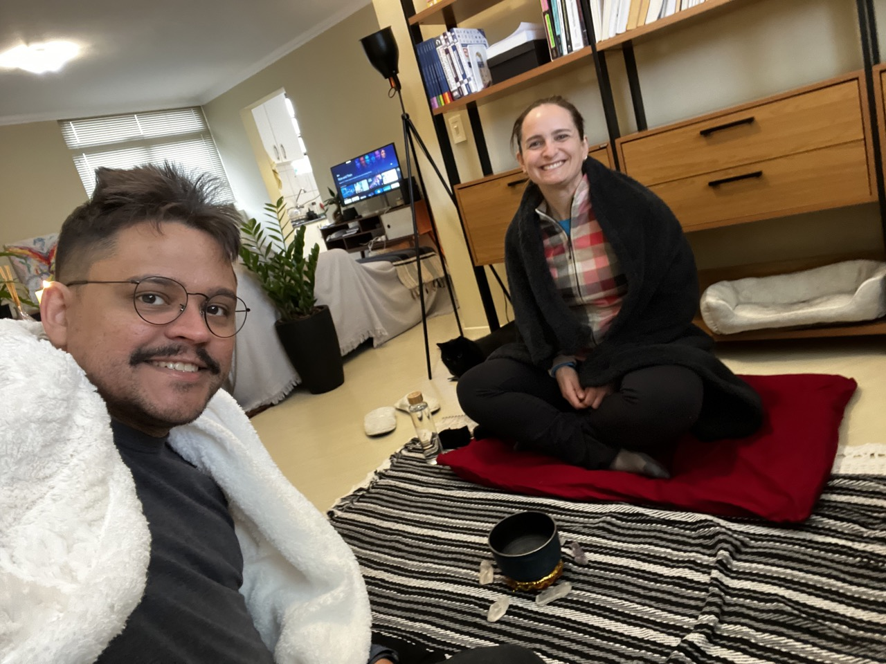

Welcome to my portfolio, where passion and innovation come together to create impactful projects. From AI-powered customer service systems to scalable architectures, each endeavor represents my commitment to excellence. Join me on this exciting journey as we explore the possibilities and pave the way for a future where technology and human ingenuity thrive.
Portifolio
Crafting Effective ETL Solutions for Fintech Data Importation
Data Pipeline
Summary: This project saw me develop and implement an efficient ETL pipeline using Python, MongoDB, and MySQL. The experience contributed to the better handling of customer data in the debt negotiation process and fostered my growth as a backend developer.

Data Extraction:
Utilizing Python's Pandas library, I managed the extraction phase. I developed a robust microservice to read and import data from the CSV file, handling potential inconsistencies and missing values to ensure data quality.
Initial Data Loading:
After extraction, the data was initially loaded into MongoDB through the same microservice. This NoSQL database acted as a staging area, simplifying the handling of data during the transformation phase due to its flexible, document-oriented structure.
Data Transformation:
After loading into MongoDB, another microservice was deployed to carry out data cleaning and transformation. This involved normalizing and standardizing data attributes, dealing with missing data, and converting data types. All these processes were implemented using Python and Pandas, highlighting my skills in data cleaning, data preprocessing, and data wrangling.
Inter-Service Communication:
After the transformation phase, the data was then sent to a MessageQueue system. This design ensured loose coupling and reliable communication between different microservices, exhibiting my proficiency in asynchronous programming and inter-service communication.
Final Data Loading:
A separate microservice was triggered by the MessageQueue system to receive the transformed data and load it into the MySQL database, the final destination. The data was spread across several tables according to the company's core business logic, demonstrating my understanding of business logic implementation and MySQL database management.
Throughout the project, I maintained the best practices in backend development, microservice architecture, MessageQueue systems, and database management. This project underscores my qualifications as a Backend Developer and my capability to handle complex, data-centric projects within a microservices ecosystem.
Stack
- Python
- Pandas
- MongoDB
- MySQL
- MessageQueue system (specific system not mentioned)
Skills required for the project:
- Advanced knowledge of Python to develop the ETL pipeline functionalities.
- Experience in data manipulation using the Pandas library.
- Familiarity with MongoDB for the initial data loading and leveraging its flexible document-oriented structure.
- Proficiency in MySQL to create and manage the tables where the final data will be stored.
- Skills in data cleaning and transformation, including data normalization, attribute standardization, and handling missing values.
- Experience in developing microservices to implement the data extraction, transformation, and loading services.
- Competence in asynchronous communication and interaction between microservices using MessageQueue systems.
- Familiarity with best practices in backend development and microservices architecture.
---
Get in touch
If you have any questions or would like to engage in a conversation, I welcome you to reach out to me. Feel free to send me a message directly, and I'll be happy to connect with you.
Feel free to visit my LinkedIn profile at @daviguides to connect and learn more about my professional journey.
You can also visit my GitHub profile at GitHub Profile: @daviguides
I look forward to hearing from you and discussing exciting opportunities or answering any queries you may have.
---
Find Out More
- "Transformative AI-Powered Customer Service System with Efficient Scalability"
- "Harnessing Frontline Technology to Enhance Customer Experience"
- "Comparing and Profiling 5 Versions of Flood-Fill Algorithms: A Comparative Study"
- "Revolutionizing Media: Empowering Companies with a Cutting-Edge Streaming Platform"
---
A bit about me
I am a very curious and proactive professional with a great capacity to absorb new knowledge. I always seek to think creatively, practically, and systematically to achieve the most relevant results for the business. I always ask myself: What pain are we addressing here? How much value and differentiation will this add to the company? If the answer is positive, I try to understand which part of the whole will bring the greatest impact. Whether alone or in a group, it is a pleasure to accomplish and see things happen.
As a neurodivergent person with Giftedness, my hyperfocus and commitment are focused on continuous learning and improvement, respecting both my uncommon abilities, such as divergent deep thinking, whole-detail perspective, integration of opposing ideas and perspectives, among others, and the limitations of my condition, such as hyperesthesia and hypersensitivities, among others.
I thrive in projects that offer constant growth opportunities and challenges, particularly those with a data-driven, pragmatic, ethical, and pluralistic decision-making approach.
Pronouns: He/Him 🌈
Fun fact: I have a beautiful black cat who sometimes shows up to say hello in meetings or do some pair programming with me.
 

Other curiosities: once every 15 days, my friend Ana comes over and we do a home co-working session.
Also, once a month, Ana and I have a Spa Saturday, dedicated to being a day of relaxation, with meditation, QiGong and yoga practices, reiki, and more. It's important for us to reduce stress levels and keep our minds fresh and ready for action.
 
